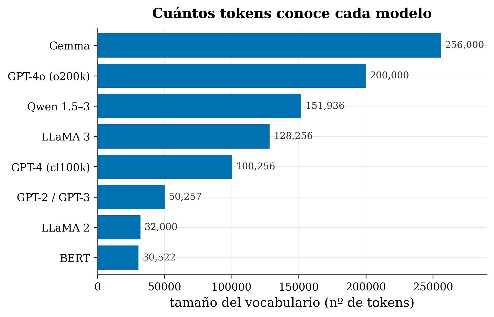

3 From text to tokens
Where we are. A language model doesn’t “see” letters or words: it sees numbers. This chapter covers the first step of every transformer —turning your text into a list of integers called tokens— and, above all, the why behind each decision. By the end you’ll know what a token is, how text is chopped up, why it’s done this way and not another, and why that explains oddities you may already have run into (counting letters “failing,” Spanish costing more than English, or pasting code eating up your context).
3.1 The idea in one sentence
Before it thinks, the model splits your text into small, reusable pieces (tokens) and replaces each piece with a number. All the intelligence then works on those numbers.
🧩 Analogy. Think of LEGO bricks. You don’t manufacture a new brick for each build: you have a fixed catalog of bricks and combine the same ones over and over. A model’s “vocabulary” is that catalog of text pieces, and tokenizing is deciding which pieces from the catalog assemble your sentence.
Let’s go through the questions everyone asks on arriving here.
3.2 Key concepts and their role in the transformer
Before we dig in, let’s define this chapter’s terms and what each one is for inside a transformer:
- Token. Definition: an integer identifier for a piece of text —usually a subword. In the transformer: it’s the only way text enters the model; everything else (embeddings, attention…) operates on these numbers, not on letters.
- Vocabulary. Definition: the fixed dictionary that maps each known piece to a number. In the transformer: it’s the available “catalog of pieces”; its size fixes how many embeddings there are and how long the sequence comes out.
- Subword. Definition: a piece bigger than a letter and smaller than a word (e.g.
tion,the). In the transformer: it’s the middle ground that keeps the vocabulary manageable and avoids words impossible to represent. - BPE (Byte-Pair Encoding). Definition: the method that builds the vocabulary by iteratively merging the most frequent pair of symbols. In the transformer: it’s how, in practice, almost every modern model decides which pieces to split text into.
- Byte-level BPE. Definition: doing BPE over the 256 bytes of the text rather than over characters. In the transformer: it guarantees that any text is representable, so an unknown token never appears (
<UNK>). - WordPiece / Unigram. Definition: the other two tokenizer families —one merges by likelihood (
##), the other prunes a huge vocabulary top-down (▁). In the transformer: you’ll see them in famous models (BERT, T5, LLaMA-2), and they explain markers like##or▁. - Special tokens. Definition: reserved vocabulary entries that aren’t text but signals (
<bos>,<eos>,[SEP],[PAD], chat roles). In the transformer: they mark boundaries and structure —beginning, end, who’s speaking— that the model needs to organize the sequence. - Vocabulary size. Definition: how many distinct tokens exist. In the transformer: it’s a trade-off —small gives long sequences; large, an enormous embedding matrix— that affects compute, memory, and how much text fits.
With that in hand, let’s develop them.
3.3 What a token is
What, exactly, is a “token”? It’s an integer identifier for a piece of text —usually a subword— which is the smallest unit the model manipulates. The model keeps a dictionary (the vocabulary) that maps each known piece to a number:
"Hello" → 15496
" world" → 1917
"!" → 0Your sentence becomes the list [15496, 1917, 0]. That’s all that enters the model. Each number will later have an associated learned vector (the embedding, in the next chapter), but the token itself is just the number.
3.4 Why not use whole words
It’s the first thing one thinks —why not one token per word?— and it doesn’t work well, for two reasons:
- The vocabulary explodes. There are millions of words (plus inflections, proper names, typos, languages…). One entry per word would mean a gigantic table.
- New words break the system. If “antidisestablishmentarianism” wasn’t in the catalog, there’s no number for it: it ends up “unknown” (
<UNK>) and the model loses information. And new words always appear.
3.5 Why not letter by letter either
So why not go character by character? That way you never run out of pieces… but the problem is the opposite: the sequences get enormously long. “antidisestablishmentarianism” would be dozens of tokens instead of 1 or 2. As we’ll see, the cost of attention grows with the square of the length, so going letter by letter blows up the compute and wastes context.
The in-between solution: subwords. Pieces bigger than a letter and smaller than a word. Frequent pieces (“of”, “tion”, ” the”) are a single token; rare ones are assembled by joining pieces. That way the catalog is manageable and there’s never a word that can’t be represented. Almost all modern models use subwords.
3.6 How the split is decided: BPE
How is it decided which pieces to split into? The most widespread method is Byte-Pair Encoding (BPE) (Sennrich et al. 2016). The idea is surprisingly simple and is best learned with an example. We start from a mini-corpus where only four words appear, with their frequencies, and we begin with the text separated into characters:
low ×5 → l o w
lower ×2 → l o w e r
newest×6 → n e w e s t
widest×3 → w i d e s tBPE rule: count all adjacent symbol pairs and merge the most frequent pair into a new symbol. Repeat N times.
- Step 1: the pair
e sappears innewest(6) andwidest(3) → 9 times, the most frequent. It’s merged:es. Nownewest=n e w es t. - Step 2: now
es tappears 9 times → it’s merged intoest. - Step 3:
l oappears inlow(5) andlower(2) → 7 times → it’s merged intolo.
After a few merges, “lowest” (which we never saw) is tokenized without trouble as lo + w + est: pieces we did learn. The vocabulary size is simply base characters + number of merges, and that number of merges is a knob you choose.
BPE is purely frequency-driven and deterministic: it always merges the most common pair. There’s no linguistic magic; the pieces that come out are statistical, not necessarily morphemes (we’ll return to this).
3.7 Byte-level BPE
What’s this “byte-level” business that shows up in GPT? Ordinary BPE works over Unicode characters, and even so it can run into a very rare character it never saw (an emoji, an uncommon ideogram). GPT-2 (Radford et al. 2019) solved it with a trick: doing BPE over the bytes of the text (its UTF-8 encoding) rather than over characters.
Why it matters. There are only 256 possible bytes, so with those 256 base symbols any text in the world —any language, emoji, symbol, or code— is representable. The result: an “unknown” token never appears. That’s why GPT-2, LLaMA-3, Qwen… use byte-level BPE. (GPT-2’s vocabulary is 50,257 tokens: 256 bytes + 50,000 merges + 1 end-of-text token.)
3.8 Other families: WordPiece and Unigram
Are there other approaches besides BPE? Yes, two worth knowing because you’ll see them in famous models:
- WordPiece (Schuster and Nakajima 2012) (used by BERT). It merges pairs like BPE, but instead of picking the most frequent it picks the one that most increases the likelihood of the corpus —in practice, the pair with the best
freq(pair) / (freq(a)·freq(b)), where a and b are the two pieces of the pair. It rewards merging pieces that almost only appear together (not ones already common on their own), and so avoids crudely gluing together pieces that are already common. It marks pieces that continue a word with##: “word” →wor ##d. - Unigram / SentencePiece (Kudo 2018; Kudo and Richardson 2018). It goes the other way around: it starts with a huge vocabulary of candidates and prunes the tokens that are least missed, down to the desired size. SentencePiece, moreover, treats the text as a raw stream including the spaces (marking them with
▁), which makes the tokenization perfectly reversible and language-agnostic. T5, LLaMA-2, and Gemma use it.
BPE and WordPiece merge bottom-up; the only thing that changes is the criterion (raw frequency vs. likelihood). Only Unigram goes top-down (pruning). And “SentencePiece” isn’t an algorithm, it’s a library that runs BPE or Unigram under the hood. The markers ## (WordPiece) and ▁/Ġ (SentencePiece/GPT-2) solve the same problem —knowing whether a piece begins a new word— in opposite ways.
3.9 The full process, from start to finish
How does it all fit together, from your text to the list of numbers? In modern libraries (e.g. HuggingFace tokenizers) tokenization is four chained stages:
- Normalization — Unicode cleanup (NFC/NFKC), sometimes lowercasing or stripping accents.
- Pre-tokenization — a first rough cut (by spaces and punctuation) so as not to merge across odd boundaries.
- Model — here BPE / WordPiece / Unigram act to split into subwords.
- Post-processing — adds special tokens (
[CLS],[SEP],<eos>…) and metadata.
3.10 Special tokens
And the tokens that aren’t text? They’re signals for the model: start of sequence (<bos>), end (<eos> / <|endoftext|>), separator ([SEP]), padding ([PAD]), or role markers in a chat (<|user|>, <|assistant|>). They occupy reserved entries in the vocabulary.
3.11 Vocabulary size
How many tokens should you have: a large or a small vocabulary? It’s a trade-off, there’s no single “best”:
- Small vocabulary → short token list, but longer sequences (more compute, less text fits in the context).
- Large vocabulary → shorter sequences, but an enormous embedding matrix (more parameters and memory) and many tokens that barely get trained.
Real models have steadily grown, mainly to cover several languages well:

figures/make_fig02_vocab.py.
| Model | Tokenizer | Vocabulary |
|---|---|---|
| BERT | WordPiece | 30,522 |
| LLaMA 2 | SentencePiece-BPE | 32,000 |
| GPT-2 / GPT-3 | byte-level BPE | 50,257 |
| GPT-4 (cl100k) | byte-level BPE | ~100,256 |
| LLaMA 3 | byte-level BPE | 128,256 |
| Qwen 1.5–3 | byte-level BPE | 151,936 |
| GPT-4o (o200k) | byte-level BPE | ~200,000 |
| Gemma | SentencePiece | 256,000 |
3.12 How much text fits in a token
As a rough rule, in English one token equals about ~4 characters (some 0.75 words). But beware:
That’s only the English average of byte-level BPE; it’s not a rule. In Spanish, German, or —worse— in non-Latin languages, the same content costs 2 to 4 times more tokens (tokenizers are trained mostly on English). And in code, indentation and spaces waste tokens unless the tokenizer has pieces for runs of spaces. That’s why an “equally long” translation can cost you much more context.
3.13 What tokens “mean”
Does each token have a meaning? Each token will receive a learned vector, and related tokens end up close together in that space —so in a sense the model gives them meaning. But a token’s boundary is statistical, not linguistic: it doesn’t have to coincide with a morpheme. “tokenization” splits into token + ization, but other words split in ways that would make a linguist wince. The token is a unit of compression, not a unit of meaning.
3.14 Oddities you’ll now understand
- The leading space counts.
" the"(with a space) and"the"(without) are different tokens, with different numbers. That’s why the same word at the start of a sentence or in the middle can be tokenized differently. - Numbers split oddly.
"12345"may come out as["123","45"]; GPT-2 didn’t treat digits specially, hence part of its reputation for being bad at arithmetic. - Glitch tokens.
" SolidGoldMagikarp"(a Reddit user) became a single token in GPT-2, seen so few times in training that it triggered erratic behavior. Newer tokenizers split it into normal pieces.
3.15 Try it
# pip install tiktoken
import tiktoken
enc = tiktoken.get_encoding("cl100k_base") # the one for GPT-3.5/4
print(enc.encode("tokenization")) # -> [token, ization] (2 tokens)
print(enc.encode(" the") == enc.encode("the")) # -> False (the space matters!)
for t in enc.encode("Hola mundo!"):
print(t, repr(enc.decode([t]))) # see each token and its textPaste any sentence (in Spanish, in English, or code) into a tokenization viewer like tiktokenizer and watch in real time how it’s chopped up and how many tokens it costs. You’ll see at a glance the penalty Spanish and code pay relative to English.
3.16 Summary
- A token is an integer that represents a piece of text (usually a subword); it’s the only thing that enters the model.
- Neither words (infinite vocabulary, unknown words) nor characters (enormously long sequences): subwords are the middle ground.
- BPE iteratively merges the most frequent pair; byte-level BPE works over the 256 bytes and so never has unknown tokens.
- WordPiece (likelihood criterion,
##) and Unigram/SentencePiece (top-down pruning,▁) are the other two families. - Vocabulary size is a trade-off (short sequence vs. large matrix); real models range from 30k to 256k.
- “4 characters per token” is only the English average; other languages and code cost more. Token boundaries are statistical, not linguistic.
Next (Chapter 3): we now have numbers. The next step is to give each token a vector —its embedding— and place it in the residual stream, the “memory” along which information travels inside the model.
3.17 Exercises
- By hand. With the mini-corpus above (
low×5,lower×2,newest×6,widest×3), do the two next BPE merges afteres,est,lo. Which pair is next? - The space. In code, tokenize
"the"," the", and" the"(with two spaces) withtiktokenand compare the lists. Explain why they differ. - The multilingual tax. Tokenize the same sentence in English and in Spanish (e.g. “the house is big” vs. “la casa es grande”) and count the tokens of each. Which costs more? Relate it to the context cost.
- No unknowns. Explain in your own words why a byte-level tokenizer never needs an
<UNK>token, whereas a word-level one does.